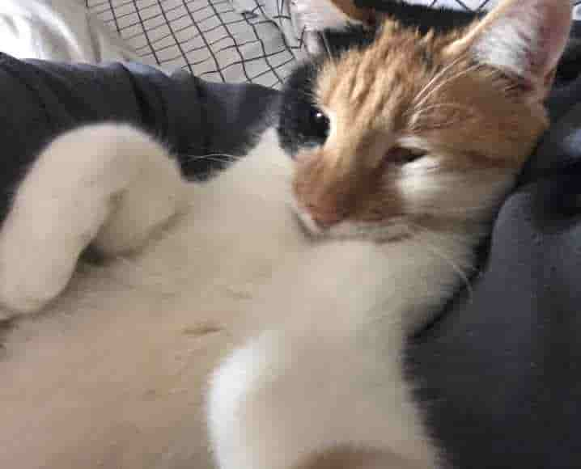
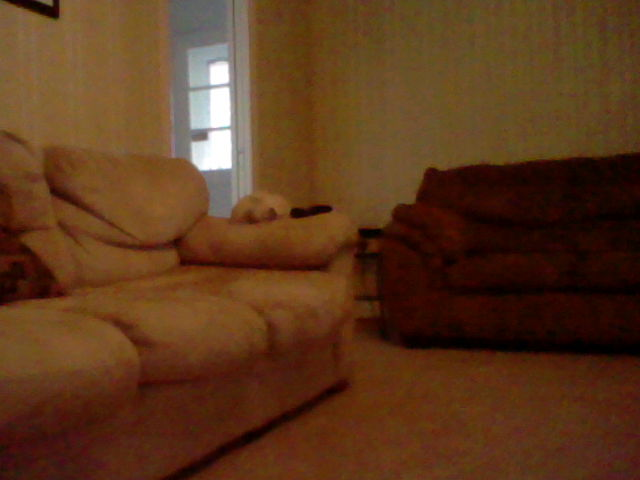
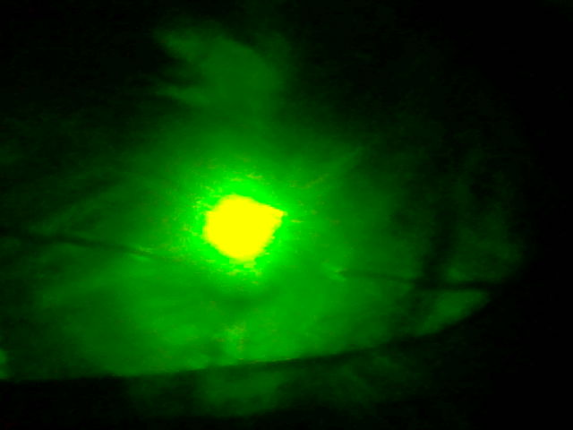
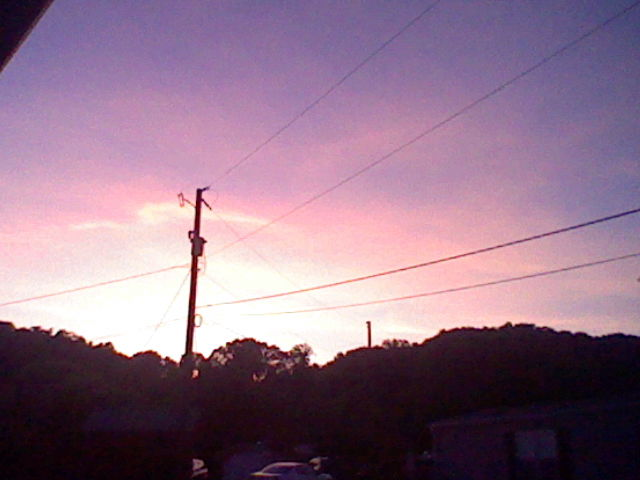
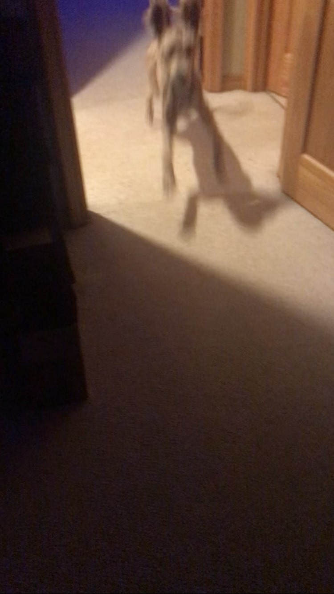
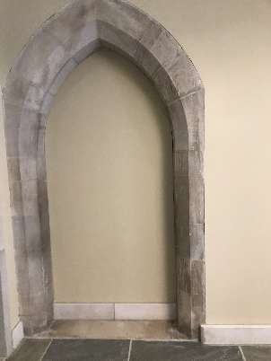
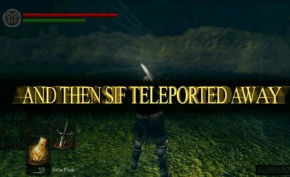

image blog
this is my img blog of posting jpegs from my phone and also an old sd card i found
i did not find it . it is my sd card . came out of a 3ds
11/19/2022
rip and tear their bones apart!
(rip and tear their bones apart)
11/12/2022
no way guys this it totally me when
totally me when cat selfy !!
she just like me for real for real !
11/06/2022
only Real ones rember
this place
11/05/2022

blackberrys! How i wish it was summer again
Notice
This website was created as part of a social experiment. The domain 'https://jackson06.neocities.org' is not operated by the user 'jackson06'. The user 'jackson06' is not real.
Thank you for your participation.
10/22/2022
What
10/22/2022
im love photogaphy! Epic
10/9/2022
this gent so Peculiar
9/30/2022
i know that this is a weekly image page, and it has not been a week since the last post, but this is my site and i can post as much as i want! besides, the credit for this spectacular photograph goes to... me! i cant tell you where i found this peculiar structure. but i will disclose that a secret area would be revealed should one strike it.
9/29/2022
this image is a pretty good image i think. i don't rember where i saw it but i've only ever seen it once and it makes me pretty happy.